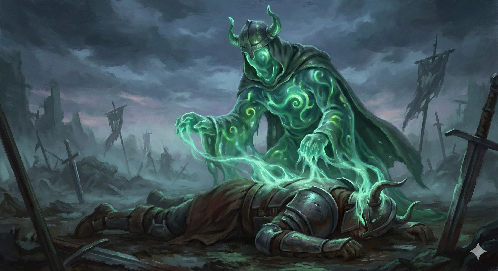

Circle of the Deceptive Form
Druids of this Circle embrace the unstable, aberrant nature of mimics. They learn to infuse their Wild Shape with chaotic essence, allowing them to shift into objects and weaponize surprise.

Mimicry of the Mundane
- Mimic Shape. Transform into an object (Speed 0). If you attack from this form, you get Advantage.
- Amorphous Form. Transform into a sticky blob. Immune to Prone, squeeze through 1-inch gaps, Advantage on Grapple checks. Attacks deal Acid damage.
Engulfing Strike
- Adhesive Grasp. Bonus action to Grapple when you hit with a melee attack in form.
- Corrosive Digestion. Grappled creatures take Acid damage equal to PB at start of your turn.
Monstrous Aspect
When you Wild Shape, pick two mutations: +2 AC, Spider Climb, Proficiency in Deception, or +5ft Reach.
True Formless Nature
- Endless Shapes. Use Mimic Shape at will (no Wild Shape cost).
- Consume Identity. Reaction when you kill a humanoid: Regain HP and steal their form (as Alter Self) perfectly.